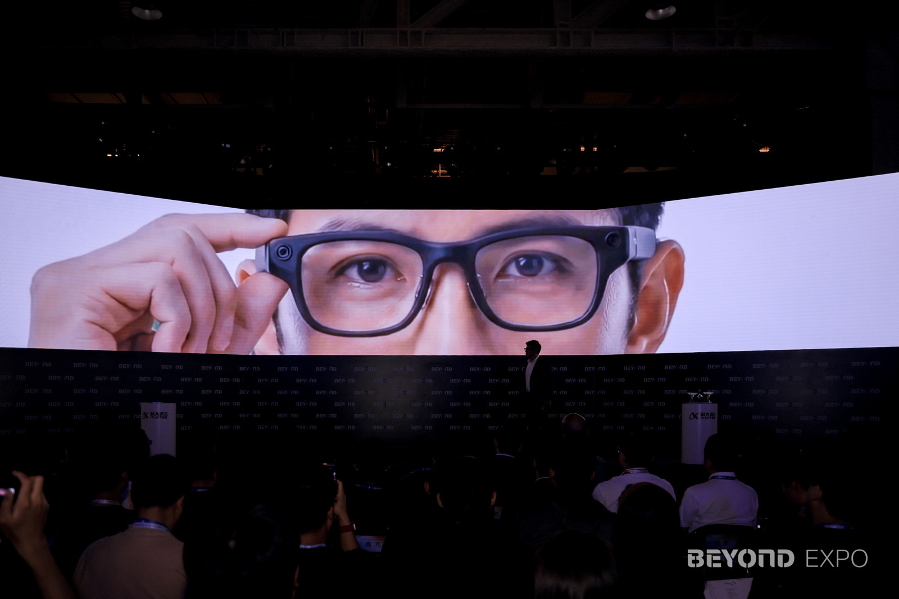
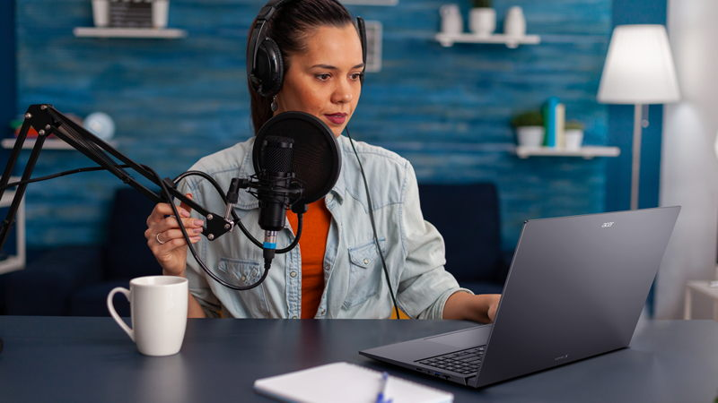
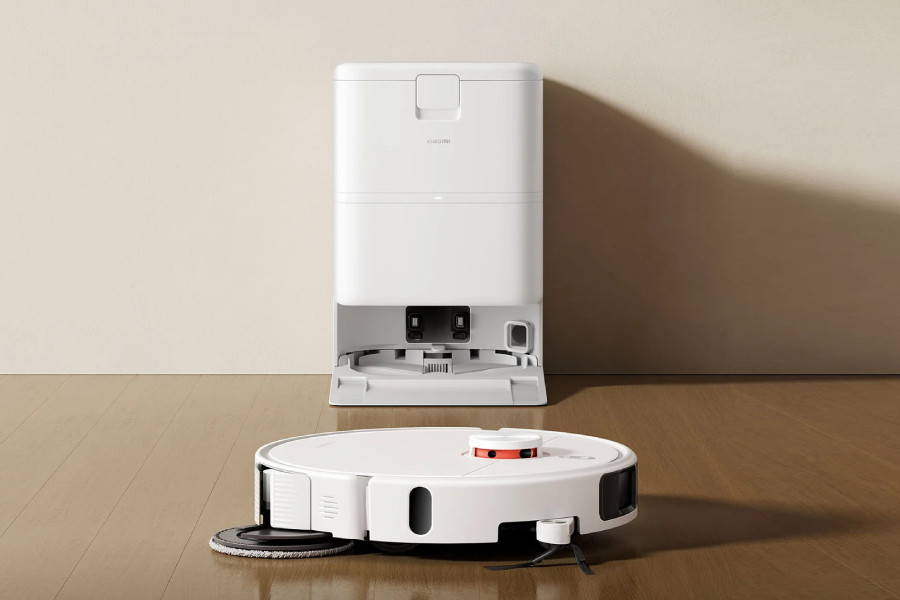
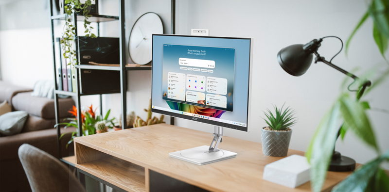
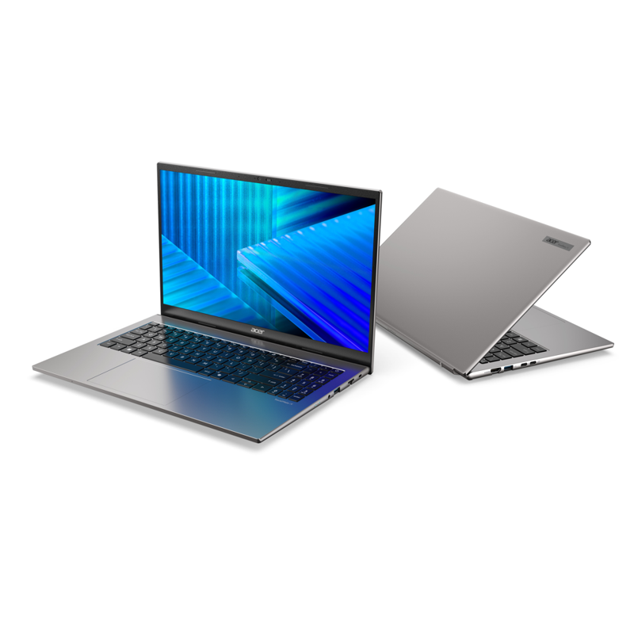
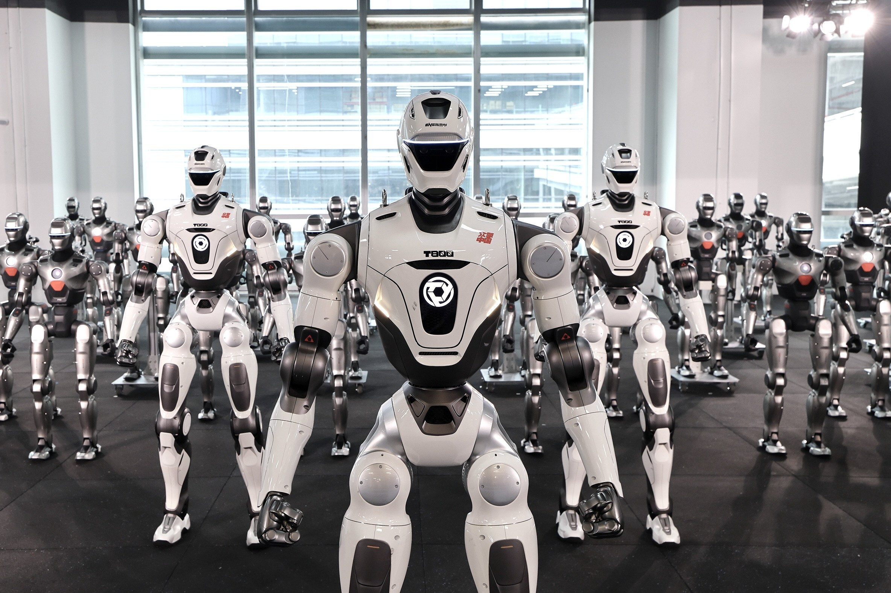

Acer GI0 AI Glasses
Acer 在 5 月 29 日发布 GI0 AI 眼镜，定位为无线、免手持的日常 AI 伴侣。它不是单纯显示器眼镜，而是把 Gemini 语音助理、图像分析、翻译、拍摄和录音放进眼镜形态。
- 支持语音交互、实时图像分析和即时翻译，面向旅行、通勤和移动办公。
- 内置摄像头可拍照和录像，搭配 AspireSync App，支持 Android 与 iOS。
- 官方价格：北美 299.99 美元起；EMEA 399 欧元起；澳大利亚 599 澳元起。
AI硬件，每日推送
本期只纳入面向最终用户的整机产品：个人穿戴与 AI PC、家庭清洁与家用桌面、企业采购的商用终端和可交付机器人。芯片、云平台、测试基础设施、纯软件和旧闻复述不列为主项。
重点是个人直接购买、佩戴或使用的 AI 眼镜和 AI PC，而不是零部件发布。
Acer 在 5 月 29 日发布 GI0 AI 眼镜，定位为无线、免手持的日常 AI 伴侣。它不是单纯显示器眼镜，而是把 Gemini 语音助理、图像分析、翻译、拍摄和录音放进眼镜形态。

TechNode 在 5 月 29 日报道，讯飞于 BEYOND Expo 2026 发布新 AI 眼镜。核心卖点不是拍摄，而是多语言实时翻译、复杂噪声识别、会议与办公代理。

Acer 扩大 Aspire AI Copilot+ PC 线，推出 Aspire X 16 AI 与 Aspire 18 AI，面向创作、学习和日常生产力用户。它们是整机 AI PC，不是处理器单独发布。
本类只收家用场景明确的完成品，包含家庭清洁机器人和面向家庭/学生/共享工作区的桌面 AI 终端。

小米在全球市场推出 H50 与 H50 Pro 扫拖机器人。它们属于明确的家庭完成品，核心提升是强吸力、自维护基站、边角清洁和全屋路径规划。

Acer 新增 Aspire C27 AI 与 C24 AI 一体机，官方明确指向家庭用户、学生和家庭共享空间。相比普通显示器，它们是带 AI 处理器和 Copilot+ 体验的整机桌面终端。
企业类按“企业最终采购的整机终端/机器人”收录；偏数据中心、测试仪、网络平台的项目放入排除表。

Acer 发布 TravelMate P6 14 AI、P2 Spin 14、X2 15、X2 14 等商用笔电，面向企业与中小企业部署。主打本地 AI 性能、安全管理和长续航。

EngineAI 宣布深圳智能制造基地启动，并称首批 T800 全尺寸人形机器人下线进入批量交付阶段。它不是家庭消费品，而是面向商业服务、教育科研、工业制造等企业客户的成品机器人。
| 候选 | 处理 | 原因 |
|---|---|---|
| BYD Xuanji A3 智驾芯片、MediaTek Computex 平台、NVIDIA/Qualcomm 相关芯片新闻 | 排除 | 芯片或上游平台，不是终端完成品。 |
| CATL 储能测试平台、VIAVI CyberFlood CF1000、EnGenius 网络/监控平台 | 排除 | 基础设施、测试设备或平台型部署，不属于最终用户 AI 硬件完成品。 |
| Acer Veriton RA110 AI Mini Workstation | 边界项 | 是整机工作站，但用途偏 AI 开发/本地模型部署，本期不放入主消费分类。 |
| Acer Predator Helios 18 AI / Nitro 16 | 边界项 | 是终端游戏本，但 AI 属性主要来自高性能 GPU 与游戏加速，本期优先收录通用 AI PC。 |
| Acer e-bike / e-scooter 智慧出行线 | 排除 | 新增语音控制和互联 App，但公开材料未将其定义为 AI 硬件。 |
| Kiwibit Bird Feeder Pro 4K AI Camera | 排除 | 5 月 29 日是评测/体验文章，产品不是本窗口新发布。 |
| Oura Ring 5、Smart Postpaid x Rokid、Noise ALT | 不重复计入 | 已在 2026-05-29 报告中纳入或讨论，本期没有新的首发事实。 |
| Tencent WorkBuddy、Claroty Claire、Operant Endpoint Protector 等 | 排除 | 纯软件或安全代理，不是硬件完成品。 |
今天的完成品信号高度集中在“把 AI 带到用户手边”的形态：眼镜负责移动场景的看、听、译和记录；AI PC 继续按个人/家庭/商用线分层铺货；家用机器人从“能扫”转向更少维护；商用机器人新闻则从演示转向产线节拍和交付能力。